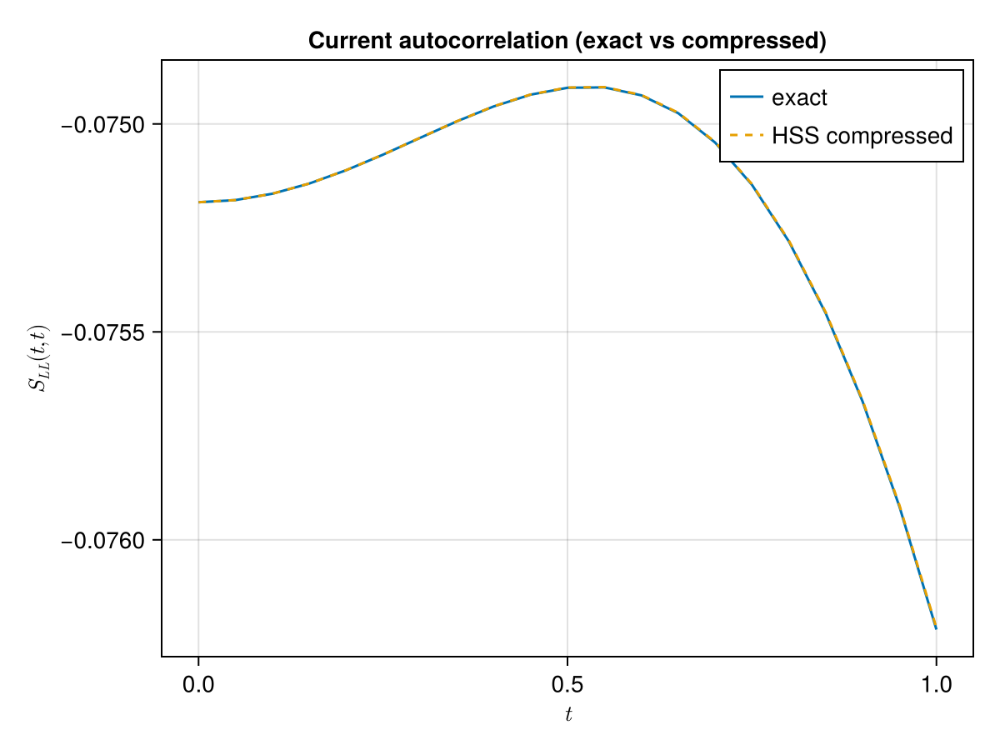
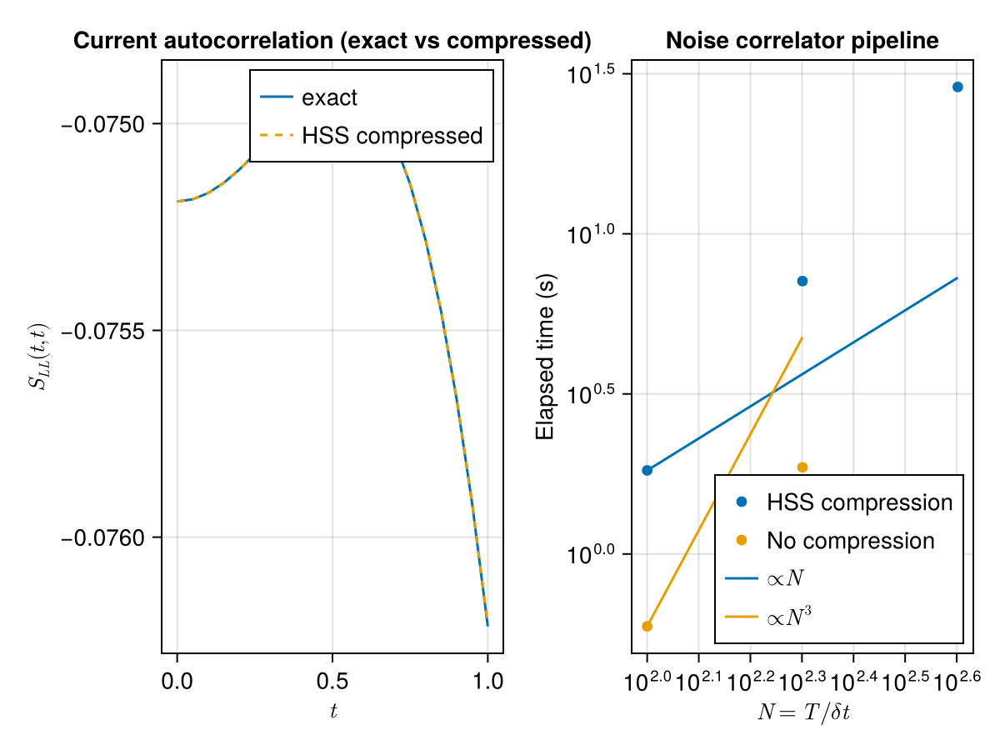
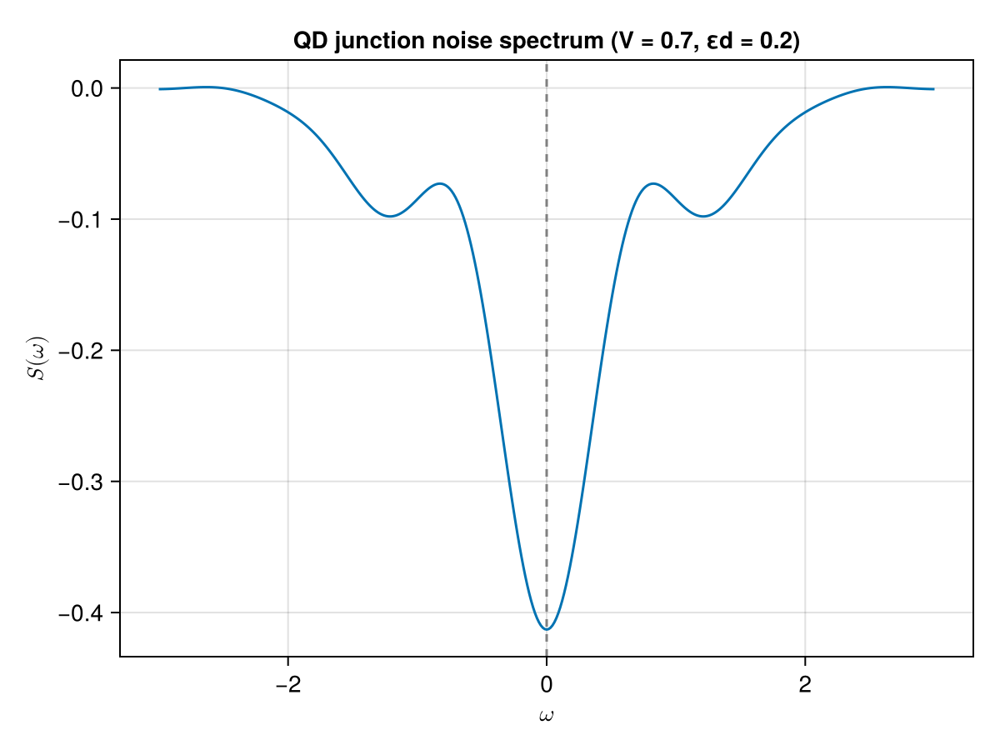
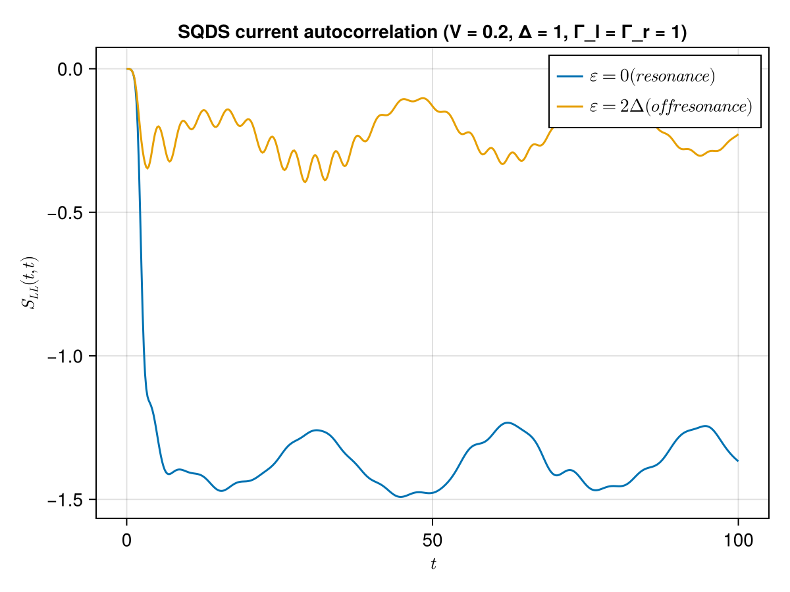
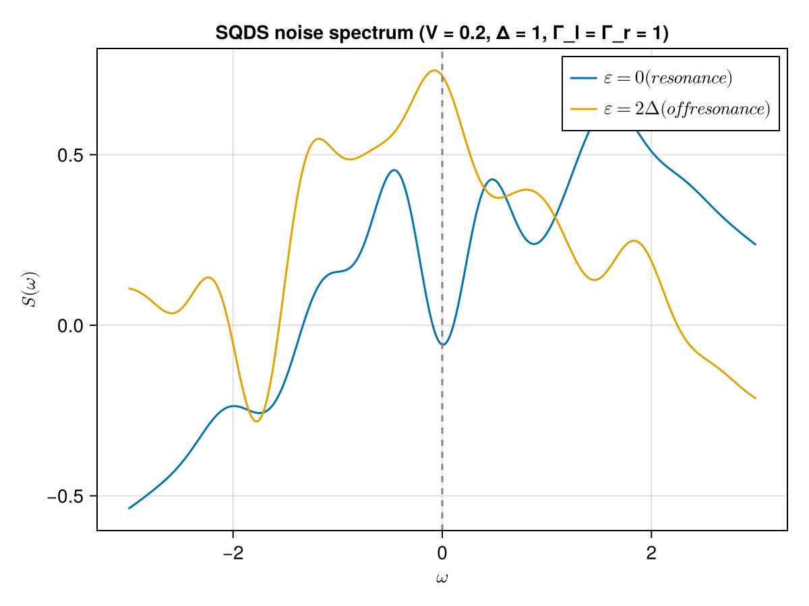

Zero-frequency current noise of a quantum dot junction
We consider a single-level quantum dot coupled to two finite leads, with the tunnel coupling switched on at $t = 0$ (quench). The two-time current correlator in lead $\alpha$ is
\[S_{\alpha\beta}(t,t') = \langle \hat I_\alpha(t)\hat I_\beta(t')\rangle, \qquad \hat I_\alpha(t) = i t_\alpha^* (\hat d^\dagger \hat \psi_\alpha)(t) - i t_\alpha (\hat \psi_\alpha^\dagger \hat d)(t).\]
Wick's theorem reduces $\langle \hat I_\alpha(t)\hat I_\beta(t')\rangle$ to products of two-point functions of the dot operator $\hat d$ and the lead surface operator $\hat{\bar\psi}_\alpha$ (the propagator of the lead boundary dressed by the dot). All of these are two-time kernels that the package manipulates in compressed form; the element-wise contractions only appear at the very end, when the two Wick branches are glued at equal time.
The mechanical recipe is:
- Solve the Dyson equation for $G^R$ and dress the kinetic component ($G^K = G^R \Sigma^K G^A$) with
solve_keldysh. - Build the vertex-weighted lead propagators $\Lambda^X = v^\dagger g^X$ with plain kernel products.
- Assemble the mixed dot-lead correlator $P = G\Lambda$ in the Keldysh representation and convert to the lesser component, $P^{<} = P^K - \tfrac{1}{2}(P^R - P^A)$.
- Assemble the fully dressed lead-lead correlator \omega^K = g^K + g^R v G^R v^\dagger g^K + g^R v G^K v^\dagger g^A
- g^K v G^A v^\dagger g^A$.
- Extract same-time values with
same_timeand contract element-wise:
\[S(t,t) = -2|t_\alpha|^2\,\mathrm{Re}\!\left[ E(t)^2 + F(t)^2 + E(t)F(t) + A_d(t)B_d(t) \right],\]
with $E = \langle \hat{\bar\psi}_\alpha^\dagger \hat d\rangle$, $F = E^*$, $A_d = \langle \hat d^\dagger \hat d\rangle$ and $B_d = \langle \hat{\bar\psi}_\alpha^\dagger \hat{\bar\psi}_\alpha\rangle$.
Because the junction is finite (a dot plus two tight-binding chains), the exact correlator can be computed by eigendecomposition of the full Hamiltonian; the demo validates the compressed evaluation against this exact arbiter before benchmarking the compressions.
using NonEquilibriumGreenFunction
using NonEquilibriumGreenFunction: same_time
using LinearAlgebra
#HSS compression does not leverage efficiently the BLAS multithreading.
BLAS.set_num_threads(1)Parameters
module Junction
using NonEquilibriumGreenFunction
using LinearAlgebra
struct Parameters
δt::Float64
T::Float64
Lchain::Int
εd::Float64
w_hop::Float64
tL::Float64
tR::Float64
μL::Float64
μR::Float64
β::Float64
end
function Parameters(; δt, T, Lchain=30, εd=0.2, w_hop=1.0, tL=0.35, tR=0.35,
μL=0.35, μR=-0.35, β=25.0)
return Parameters(δt, T, Lchain, εd, w_hop, tL, tR, μL, μR, β)
end
axis(p::Parameters) = 0:p.δt:p.T
fermi(ε, μ, β) = 1 / (exp(β * (ε - μ)) + 1)
# Bare lead propagators: for a surface-coupled tight-binding chain the
# retarded surface Green function is a sum over the chain eigenmodes,
# $g^R(\tau) = -i\sum_k |v_{1k}|^2 e^{-i\lambda_k \tau}$, and the kinetic
# component is $g^K = \tfrac{1}{2}(g^> + g^<)$.
function chain_eigs(p::Parameters, start)
h = zeros(p.Lchain, p.Lchain)
for k in 1:p.Lchain
h[k, k] = 0.0
if k < p.Lchain
h[k, k+1] = h[k+1, k] = p.w_hop
end
end
ev = eigen(Symmetric(h))
return ev.values, ev.vectors
end
function lead_kernels(p::Parameters, ax, cpr, side::Symbol)
if side === :L
lam, v, μ, t = chain_eigs(p, 1)..., p.μL, p.tL
else
lam, v, μ, t = chain_eigs(p, 1)..., p.μR, p.tR
end
spectral(τ) = sum(abs2(v[1, k]) * exp(-1im * lam[k] * τ) for k in 1:p.Lchain)
g_R = RetardedKernel(ax,
TwoTime((t, tp) -> t >= tp ? -1im * spectral(t - tp) : 0.0im),
compression=cpr)
g_K = AcausalKernel(ax, TwoTime((t, tp) -> 0.5 * (
-1im * sum(abs2(v[1, k]) * exp(-1im * lam[k] * (t - tp)) *
(1 - fermi(lam[k], μ, p.β)) for k in 1:p.Lchain) +
+1im * sum(abs2(v[1, k]) * exp(-1im * lam[k] * (t - tp)) *
fermi(lam[k], μ, p.β) for k in 1:p.Lchain))),
compression=cpr)
coupling = LocalKernel(ax, _ -> t + 0.0im, compression=cpr)
return (; g_R, g_K, coupling, t)
end
function simulate(p::Parameters; cpr=HssCompression(leafsize=32))
ax = axis(p)
L = lead_kernels(p, ax, cpr, :L)
R = lead_kernels(p, ax, cpr, :R)
Σ_R = L.coupling' * L.g_R * L.coupling + R.coupling' * R.g_R * R.coupling
Σ_K = L.coupling' * L.g_K * L.coupling + R.coupling' * R.g_K * R.coupling
g_dot = RetardedKernel(ax,
TwoTime((t, tp) -> t >= tp ? -1im * exp(-1im * p.εd * (t - tp)) : 0.0im),
compression=cpr)
(; G_R, G_K) = solve_keldysh(g_dot, Σ_R, Σ_K)
return (; G_R, G_K, L, R)
end
# Noise correlator, following the recipe above: kernel algebra for the
# two-time objects, element-wise contractions at the very end.
function noise_correlator(p::Parameters, sol; lead=:L)
Ld = lead === :L ? sol.L : sol.R
coupling, t = Ld.coupling, Ld.t
G_R, G_K = sol.G_R, sol.G_K
P_K = G_R * (coupling' * Ld.g_K) + G_K * (coupling' * (Ld.g_R)')
P_R = G_R * (coupling' * Ld.g_R)
P_less = P_K - 0.5 * (P_R - adjoint(P_R))
ω_K = Ld.g_K +
(Ld.g_R * coupling) * G_R * (coupling' * Ld.g_K) +
(Ld.g_R * coupling) * G_K * (coupling' * (Ld.g_R)') +
(Ld.g_K * coupling) * (G_R') * (coupling' * (Ld.g_R)')
E = [-1im * blk[1] for blk in same_time(P_less)]
F = conj.(E)
A_d = [0.5 - 1im * blk[1] for blk in same_time(G_K)]
B_d = [0.5 - 1im * blk[1] for blk in same_time(ω_K)]
return [-2 * abs2(t) .* real.(E .^ 2 .+ F .^ 2 .+ E .* F .+ A_d .* B_d) ...]
end
endMain.var"##144".JunctionExact arbiter
The full junction (dot + two chains) is diagonalized exactly; Wick pairings over the exact Gaussian state give the reference correlator.
module Arbiter
using LinearAlgebra
struct Model
Lchain::Int
εd::Float64
w_hop::Float64
tL::Float64
tR::Float64
μL::Float64
μR::Float64
β::Float64
N::Int
iL::Int
iR::Int
h_on::Matrix{Float64}
U_on::Matrix{Float64}
lam::Vector{Float64}
C0T::Matrix{Float64}
F0::Matrix{Float64}
u_cache::Dict{Float64,Matrix{ComplexF64}}
end
function Model(; Lchain=30, εd=0.2, w_hop=1.0, tL=0.35, tR=0.35,
μL=0.35, μR=-0.35, β=25.0)
N = 2 * Lchain + 1
iL, iR = 2, Lchain + 2
h = zeros(N, N)
h[1, 1] = εd
for (start, μ) in ((iL, μL), (iR, μR))
for k in 0:Lchain-1
if k < Lchain - 1
h[start+k, start+k+1] = h[start+k+1, start+k] = w_hop
end
end
end
# decoupled Hamiltonian sets the initial state (couplings switched on at t=0)
ev_off = eigen(Symmetric(h))
U_off, lam_off = ev_off.vectors, ev_off.values
h[1, iL] = h[iL, 1] = tL
h[1, iR] = h[iR, 1] = tR
ev = eigen(Symmetric(h))
U, lam = ev.vectors, ev.values
# initial state: dot half-filled, chains at their own μ
C0 = zeros(N, N)
for k in 1:N
w_dot = abs2(U_off[1, k])
wL = sum(abs2.(U_off[iL:iL+Lchain-1, k]))
wR = sum(abs2.(U_off[iR:iR+Lchain-1, k]))
f = w_dot > max(wL, wR) ? 0.5 :
(wL > wR ? 1 / (exp(β * (lam_off[k] - μL)) + 1) :
1 / (exp(β * (lam_off[k] - μR)) + 1))
C0 .+= f .* (U_off[:, k] * U_off[:, k]')
end
F0 = Matrix(1.0I, N, N) - C0
return Model(Lchain, εd, w_hop, tL, tR, μL, μR, β, N, iL, iR,
h, U, lam, Matrix(C0'), F0, Dict{Float64,Matrix{ComplexF64}}())
end
function u(m::Model, t)
get!(m.u_cache, t) do
m.U_on * Diagonal(exp.(-1im * m.lam * t)) * m.U_on'
end
end
# `<c_a†(t) c_b(t')>`
gnp(m::Model, a, t, b, tp) = (u(m, t) * m.C0T * u(m, tp)')[a, b]
# `<c_a(t) c_b†(t')>`
gnn(m::Model, a, t, b, tp) = (u(m, t) * m.F0 * u(m, tp)')[a, b]
pairval(m, o1, o2) =
if o1[3] && !o2[3]
gnp(m, o1[1], o1[2], o2[1], o2[2])
elseif !o1[3] && o2[3]
gnn(m, o1[1], o1[2], o2[1], o2[2])
else
0.0 + 0.0im
end
wick4(m, A, B, C, D) = pairval(m, A, B) * pairval(m, C, D) -
pairval(m, A, C) * pairval(m, B, D) +
pairval(m, A, D) * pairval(m, C, B)
function S_exact(m::Model, siteα, siteβ, t, tp)
tα = siteα == m.iL ? m.tL : m.tR
tβ = siteβ == m.iL ? m.tL : m.tR
A1 = (1, t, true); A2 = (siteα, t, false)
B1 = (siteα, t, true); B2 = (1, t, false)
C1 = (1, tp, true); C2 = (siteβ, tp, false)
D1 = (siteβ, tp, true); D2 = (1, tp, false)
S = (1im * conj(tα)) * (1im * conj(tβ)) * wick4(m, A1, A2, C1, C2) -
(1im * conj(tα)) * (-1im * tβ) * wick4(m, A1, A2, D1, D2) -
(-1im * tα) * (1im * conj(tβ)) * wick4(m, B1, B2, C1, C2) +
(-1im * tα) * (-1im * tβ) * wick4(m, B1, B2, D1, D2)
return S
end
endMain.var"##144".ArbiterValidation
A short axis against the exact arbiter:
p = Junction.Parameters(δt=0.05, T=1.0)
ax = collect(Junction.axis(p))
sol = Junction.simulate(p)
S_pkg = Junction.noise_correlator(p, sol; lead=:L)
arb = Arbiter.Model(Lchain=p.Lchain, εd=p.εd, w_hop=p.w_hop,
tL=p.tL, tR=p.tR, μL=p.μL, μR=p.μR, β=p.β)
S_ref = [real(Arbiter.S_exact(arb, arb.iL, arb.iL, t, t)) for t in ax]
err = maximum(abs.(S_pkg .- S_ref))
println("max |S_compressed - S_exact| = $(err)")max |S_compressed - S_exact| = 3.9269245389050855e-6
Result
The compressed evaluation reproduces the exact correlator up to the $\mathcal{O}(\delta t^2)$ quadrature error of the time discretization.
using CairoMakie
using LaTeXStrings
f = Figure()
f_ax = Axis(f[1, 1], xlabel=L"t", ylabel=L"S_{LL}(t,t)",
title="Current autocorrelation (exact vs compressed)")
lines!(f_ax, ax, S_ref, label="exact")
lines!(f_ax, ax, S_pkg, label="HSS compressed", linestyle=:dash)
axislegend(position=:rt)
save(joinpath(@__DIR__, "noise_correlator.svg"), f)
f
Compression benchmark
The full pipeline (Dyson solve plus correlator assembly) is benchmarked against the number of time steps, with and without compression. The uncompressed path stores dense $N\times N$ matrices and scales as $N^3$ in time and $N^2$ in memory; the HSS-compressed path scales quasi-linearly.
CI and interactive runs use a reduced grid.
if haskey(ENV, "CI")
tab_N_hss = [100, 200, 400]
tab_N_non = [100, 200]
else
tab_N_hss = [100, 200, 400, 800, 1600]
tab_N_non = [100, 200, 400, 800]
end
function benchmark_noise(N, cpr)
p = Junction.Parameters(δt=0.02, T=(N - 1) * 0.02)
ts = Float64[]
for _ in 1:2
push!(ts, @elapsed begin
sol = Junction.simulate(p, cpr=cpr)
Junction.noise_correlator(p, sol)
end)
end
return minimum(ts)
end
benchmark_noise(tab_N_hss[1], HssCompression())
t_hss = [benchmark_noise(N, HssCompression()) for N in tab_N_hss]
t_non = [benchmark_noise(N, NONCompression()) for N in tab_N_non]
f_ax = Axis(f[1, 2], xscale=log10, yscale=log10,
title="Noise correlator pipeline",
xlabel=L"N = T/\delta t", ylabel="Elapsed time (s)")
scatter!(f_ax, tab_N_hss, t_hss, label="HSS compression")
scatter!(f_ax, tab_N_non, t_non, label="No compression")
lines!(f_ax, tab_N_hss, tab_N_hss ./ tab_N_hss[1] .* t_hss[1], label=L"\propto N")
lines!(f_ax, tab_N_non,
(tab_N_non ./ tab_N_non[1]) .^ 3 .* t_non[1], label=L"\propto N^3")
axislegend(position=:rb)
save(joinpath(@__DIR__, "noise_benchmark.svg"), f)
f
For the largest sizes the dense path also exceeds memory: at $N = 1600$ the uncompressed pipeline peaks around 2.5 GB and at $N = 3200$ it does not fit in a 4 GB sandbox, while the HSS-compressed pipeline stays near the Julia baseline (~1.1 GB) for all sizes.
Finite-frequency noise: the QD junction spectrum
The equal-time plateau says how large the noise is, but not where it lives in frequency. The finite-frequency (symmetrized) spectrum is the Wigner transform of the full two-time correlator,
\[S(\omega) = \int d\tau\, e^{i\omega\tau} S\!\left(t_c+\tfrac{\tau}{2}, t_c-\tfrac{\tau}{2}\right),\]
averaged over stationary center times $t_c$ in the plateau. The mechanical Wick recipe is unchanged, but every pairing is now a full two-time kernel: the element-wise products only appear at the very end, when the $N\times N$ pair matrices are glued entry by entry.
For the normal-state junction the pairing dictionary (each block validated against the exact arbiter above) reads
| pairing | kernel block |
|---|---|
| $\langle d^\dagger(t) d(t')\rangle$ | $-i\, G^<(t, t')$ (diagonal fixed) |
| $\langle d^\dagger(t) \bar\psi(t')\rangle$ | $-i\, P^<(t, t')$ |
| $\langle \bar\psi^\dagger(t) d(t')\rangle$ | $+i\, P^<(t', t)$ |
| $\langle \bar\psi^\dagger(t) \bar\psi(t')\rangle$ | $-i\, \omega^<(t, t')$ (diagonal fixed) |
On the diagonal the trapezoid rule stores the full anticommutator ($-\tfrac{i}{2}$ too much), so $\tfrac{i}{2}$ is subtracted from the normal blocks before the pairings are extracted.
The Wigner transform below is shared with the superconducting section.
"""
Symmetrized noise spectrum S(ω): Wigner transform of S(t,t') averaged over
stationary center times, with a Tukey taper (flat center, cosine roll-off) in
the relative-time window. `tc_min` skips the switch-on transient, `τmax` bounds
the correlator window.
"""
function wigner_spectrum(ts, S; tc_min=20.0, rtap=0.5, nω=401, ωmax=3.0, τmax=12.0)
N = length(ts); δt = ts[2] - ts[1]
K = min(round(Int, τmax ÷ (2δt)), (N - 1) ÷ 2)
ics = [ic for ic in 1:N if ts[ic] >= tc_min && ic - K >= 1 && ic + K <= N]
isempty(ics) && error("no stationary centers available")
kflat = round(Int, rtap * K)
w = [abs(k) <= kflat ? 1.0 :
0.5*(1 + cos(π*(abs(k) - kflat)/(K - kflat))) for k in -K:K]
Δτ = 2δt
om = collect(range(-ωmax, ωmax; length=nω))
Sw = zeros(Float64, length(om))
for (iw, ω) in enumerate(om)
acc = 0.0im
for ic in ics, k in -K:K
acc += w[k+K+1] * exp(1im*ω*Δτ*k) * S[ic+k, ic-k]
end
Sw[iw] = real(acc) * Δτ / length(ics)
end
return om, Sw
end
"""
Full two-time noise correlator S(t,t') of lead `:L` for the QD junction,
assembled from the two-time Wick dictionary. Kernels are materialized to
dense pair matrices; element-wise products only at the very end.
"""
function S_two_time(p, sol; lead=:L)
Ld = lead === :L ? sol.L : sol.R
coupling, tα = Ld.coupling, Ld.t
G_R, G_K = sol.G_R, sol.G_K
P_K = G_R * (coupling' * Ld.g_K) + G_K * (coupling' * (Ld.g_R)')
P_R = G_R * (coupling' * Ld.g_R)
P_less = P_K - 0.5 * (P_R - adjoint(P_R))
ω_K = Ld.g_K +
(Ld.g_R * coupling) * G_R * (coupling' * Ld.g_K) +
(Ld.g_R * coupling) * G_K * (coupling' * (Ld.g_R)') +
(Ld.g_K * coupling) * (G_R') * (coupling' * (Ld.g_R)')
ω_R = Ld.g_R + (Ld.g_R * coupling) * G_R * (coupling' * Ld.g_R)
ω_less = ω_K - 0.5 * (ω_R - adjoint(ω_R))
G_less = G_K - 0.5 * (G_R - adjoint(G_R))
mat(op) = op isa NonEquilibriumGreenFunction.SumOperator ?
Matrix(mat(op.left) .+ mat(op.right)) : Matrix(matrix(op))
fixdiag!(M) = (M[diagind(M)] .-= 0.5im; M)
GL = fixdiag!(mat(G_less))
ML = mat(P_less)
WL = fixdiag!(mat(ω_less))
dd = -1im * GL # ⟨d†(t) d(t')⟩
E = -1im * ML # ⟨d†(t) ψ̄(t')⟩
F = 1im * ML' # ⟨ψ̄†(t) d(t')⟩
ww = -1im * WL # ⟨ψ̄†(t) ψ̄(t')⟩
Eii = diag(E); Fii = diag(F)
W_XX = Eii .* transpose(Eii) + E .* transpose(E)
W_XY = Eii .* transpose(Fii) + dd .* transpose(ww)
W_YX = Fii .* transpose(Eii) + ww .* transpose(dd)
W_YY = Fii .* transpose(Fii) + F .* transpose(F)
a = 1im * conj(tα); c = -1im * tα
S = (a*a) .* W_XX - (a*c) .* W_XY - (c*a) .* W_YX + (c*c) .* W_YY
return collect(0:p.δt:p.T), S
endS_two_time (generic function with 1 method)First the two-time correlator is validated against the exact arbiter on a set of off-diagonal points:
p2 = Junction.Parameters(δt=0.05, T=10.0)
sol2 = Junction.simulate(p2)
ts_qd, S_qd = S_two_time(p2, sol2)
arb2 = Arbiter.Model(Lchain=p2.Lchain, εd=p2.εd, w_hop=p2.w_hop,
tL=p2.tL, tR=p2.tR, μL=p2.μL, μR=p2.μR, β=p2.β)
errs = Float64[]
for (i, j) in ((10, 20), (50, 30), (100, 100), (80, 150), (150, 90), (180, 40))
push!(errs, abs(S_qd[i, j] -
Arbiter.S_exact(arb2, arb2.iL, arb2.iL, ts_qd[i], ts_qd[j])))
end
println("max |S_two_time - S_exact| = $(maximum(errs))")max |S_two_time - S_exact| = 1.2745294358869555e-5
The Wigner transform then gives the finite-frequency spectrum of the QD junction, averaged over the stationary plateau:
S_qd_sym = 0.5 .* (S_qd .+ S_qd')
ωs_qd, Sw_qd = wigner_spectrum(ts_qd, S_qd_sym; tc_min=4.0, ωmax=3.0, τmax=8.0)
f_spec_qd = Figure()
ax_qd = Axis(f_spec_qd[1, 1], xlabel=L"\omega", ylabel=L"S(\omega)",
title="QD junction noise spectrum (V = 0.7, εd = 0.2)")
lines!(ax_qd, ωs_qd, Sw_qd)
vlines!(ax_qd, [0.0], color=:gray, linestyle=:dash)
save(joinpath(@__DIR__, "qd_noise_spectrum.svg"), f_spec_qd)
f_spec_qd
The spectrum is symmetric in $\omega$ (the symmetrized correlator is real), broad around $\omega = 0$ (thermal fluctuation of the quench-relaxed junction), and decays over the lead bandwidth ($w = 1$).
Superconducting leads: SQDS noise at and off resonance
The same mechanical recipe applies in Nambu space (bs = 2), where the current operator also pairs anomalous components. Wick's theorem then produces one extra contraction: with $\hat I = i t^* \hat X - i t \hat Y$, $X = d^\dagger\bar\psi$, $Y = \bar\psi^\dagger d$, the same-time correlator picks up the anomalous cross term $\langle d^\dagger\bar\psi^\dagger\rangle\langle\bar\psi d\rangle$, and the assembly becomes
\[S(t,t) = -2|t|^2\,\mathrm{Re}\!\left[ E^2 + F^2 + EF + A_d B_d - |A_3|^2 \right],\]
with $A_3 = \langle d^\dagger\bar\psi^\dagger\rangle$ extracted from the greater component of the mixed correlator, $P^{>} = P^K + \tfrac{1}{2}(P^R - P^A)$, at the hole-electron block. This Nambu recipe was validated against an exact finite-chain BdG arbiter (Kitaev chains, quench protocol) to $\mathcal{O}(\delta t^2)$, reaching $\sim 3\times 10^{-7}$ at $\delta t = 0.0125$.
We use the wideband BCS leads of the SQDS example: the retarded lead Green function is the $\delta + $ Bessel kernel and the kinetic branch follows from the thermal kernel. The tunnel vertices are apodized $\mathcal T_l(t) = \sqrt{\Gamma_l/2}\, e^{i\sigma_z\phi_l(t)/2}\sigma_z$.
module SqdsJunction
using NonEquilibriumGreenFunction
using NonEquilibriumGreenFunction: same_time
using LinearAlgebra
using SpecialFunctions: besselj0, besselj1
struct Parameters
δt::Float64
T::Float64
Γl::Float64
Γr::Float64
β::Float64
Δ::Float64
ε::Float64
ϕl
ϕr
end
Parameters(; δt, T, Γl, Γr, β, Δ, ε, ϕl, ϕr) =
Parameters(δt, T, Γl, Γr, β, Δ, ε, ϕl, ϕr)
axis(p::Parameters) = 0:p.δt:p.T
σ0() = [1.0 0.0; 0.0 1.0]
σx() = [0 1.0; 1.0 0.0]
σz() = [1.0 0.0; 0.0 -1.0]
function lead_kernels(p, ax, cpr)
g_R = LocalKernel(ax, t -> -1im*σ0(), compression=cpr) +
RetardedKernel(ax,
Stationary(τ -> p.Δ*besselj0(p.Δ*τ)*σx() + 1im*p.Δ*besselj1(p.Δ*τ)*σ0()),
compression=cpr)
ρ = AcausalKernel(ax,
Stationary(τ -> thermal_kernel(τ, p.β)*σ0() .|> ComplexF64), compression=cpr)
g_K = g_R * ρ - ρ * g_R'
return (; g_R, g_K)
end
function vertex(ax, Γ, ϕ, cpr)
apod(t) = 1 - exp(-(t/2)^2)
LocalKernel(ax, t -> apod(t)*sqrt(Γ/2)*exp(1im*σz()*ϕ(t)/2)*σz() .+ 0.0im,
compression=cpr)
end
function simulate(p; cpr=NONCompression())
ax = axis(p)
(; g_R, g_K) = lead_kernels(p, ax, cpr)
Tl = vertex(ax, p.Γl, p.ϕl, cpr)
Tr = vertex(ax, p.Γr, p.ϕr, cpr)
Σ_R = Tl'*g_R*Tl + Tr'*g_R*Tr
Σ_K = Tl'*g_K*Tl + Tr'*g_K*Tr
g_dot = RetardedKernel(ax,
Stationary(τ -> -1im*[exp(-1im*p.ε*τ) 0; 0 exp(1im*p.ε*τ)]), compression=cpr)
(; G_R, G_K) = solve_keldysh(g_dot, Σ_R, Σ_K; check=false)
return (; G_R, G_K, g_R, g_K, Tl, Tr)
end
function noise(p, sol; lead=:L)
(; G_R, G_K, g_R, g_K, Tl, Tr) = sol
Tα = lead === :L ? Tl : Tr
ax = axis(p) |> collect
apod(t) = 1 - exp(-(t/2)^2)
P_K = G_R*(Tα'*g_K) + G_K*(Tα'*(g_R'))
P_R = G_R*(Tα'*g_R)
P_A = adjoint(P_R)
P_less = P_K - 0.5*(P_R - P_A)
P_greater = P_K + 0.5*(P_R - P_A)
ω_K = g_K + (g_R*Tα)*G_R*(Tα'*g_K) +
(g_R*Tα)*G_K*(Tα'*(g_R')) + (g_K*Tα)*(G_R')*(Tα'*(g_R'))
E = [-1im*b[1, 1] for b in same_time(P_less)]
F = conj.(E)
Ad = [0.5 - 1im*b[1, 1] for b in same_time(G_K)]
Bd = [0.5 - 1im*b[1, 1] for b in same_time(ω_K)]
A3 = [1im*b[2, 1] for b in same_time(P_greater)]
S = [real(-2*apod(t)^2*(p.Γl/2)*
real(E[k]^2 + F[k]^2 + E[k]*F[k] + Ad[k]*Bd[k] - abs2(A3[k])))
for (k, t) in enumerate(ax)]
return ax, S
end
endMain.var"##144".SqdsJunctionTwo runs: the dot at the gap center ($\varepsilon = 0$, resonant with the Andreev bound state) and deep in the gap ($\varepsilon = 2\Delta$). The bias $eV = 0.2 < 2\Delta$ is subgap, so the average current vanishes and the correlator measures purely the charge-fluctuation (Andreev) noise.
V = 0.2
p_res = SqdsJunction.Parameters(δt=0.2, T=100, Γl=1, Γr=1, β=100, Δ=1.0, ε=0.0,
ϕl=t -> 0, ϕr=t -> V*t)
p_off = SqdsJunction.Parameters(δt=0.2, T=100, Γl=1, Γr=1, β=100, Δ=1.0, ε=2.0,
ϕl=t -> 0, ϕr=t -> V*t)
sol_res = SqdsJunction.simulate(p_res)
ts_sqds, S_res = SqdsJunction.noise(p_res, sol_res)
sol_off = SqdsJunction.simulate(p_off)
_, S_off = SqdsJunction.noise(p_off, sol_off)
f_sqds = Figure()
f_ax = Axis(f_sqds[1, 1], xlabel=L"t", ylabel=L"S_{LL}(t,t)",
title="SQDS current autocorrelation (V = 0.2, Δ = 1, Γ_l = Γ_r = 1)")
lines!(f_ax, ts_sqds, S_res, label=L"\varepsilon = 0 (resonance)")
lines!(f_ax, ts_sqds, S_off, label=L"\varepsilon = 2\Delta (off resonance)")
axislegend(position=:rt)
save(joinpath(@__DIR__, "sqds_noise.svg"), f_sqds)
f_sqds
At resonance the dot pins an Andreev bound state at zero energy: the equal-time noise saturates at a large negative plateau ($S \approx -1.4$, about $9\times$ the off-resonant value) after a transient set by the apodization. Off resonance the bound state moves into the gap and both the amplitude and the relaxation rate of the correlator drop sharply.
Energy spectrum of the noise
The equal-time plateau alone does not say where the noise lives in frequency. The interesting object is the symmetrized spectrum
\[S(\omega) = \int d\tau\, e^{i\omega\tau}\, S\!\left(t_c+\tfrac{\tau}{2}, t_c-\tfrac{\tau}{2}\right),\]
averaged over center times $t_c$ in the stationary plateau. To get there we need the full two-time correlator $S(t, t')$, not just its diagonal. The same mechanical Wick recipe applies, but now every pairing is a two-time kernel: the element-wise products only appear at the very end, when the full $N\times N$ pair matrices are multiplied entry by entry.
The dictionary maps each elementary pairing onto a block of the lesser / greater kernels (validated pair by pair against the exact BdG arbiter):
| pairing | kernel block |
|---|---|
| $\langle d^\dagger(t) d(t')\rangle$ | $-i\, G^<_{11}(t', t)$ |
| $\langle d(t) d^\dagger(t')\rangle$ | $+i\, G^>_{11}(t, t')$ |
| $\langle d^\dagger(t) \bar\psi(t')\rangle$ | $+i\, P^>_{22}(t, t')$ |
| $\langle \bar\psi^\dagger(t) d(t')\rangle$ | $-i\, P^<_{11}(t', t)$ |
| $\langle d^\dagger(t) \bar\psi^\dagger(t')\rangle$ | $+i\, P^>_{21}(t, t')$ |
| $\langle \bar\psi(t) d(t')\rangle$ | $+i\, P^<_{21}(t', t)$ |
| $\langle \bar\psi^\dagger(t) \bar\psi(t')\rangle$ | $-i\, \omega^<_{11}(t', t)$ |
| $\langle \bar\psi(t) \bar\psi^\dagger(t')\rangle$ | $+i\, \omega^>_{11}(t, t')$ |
| $\langle \bar\psi(t) \bar\psi(t')\rangle$ | $+i\, \omega^>_{12}(t, t')$ |
| $\langle \bar\psi^\dagger(t) \bar\psi^\dagger(t')\rangle$ | $+i\, \omega^>_{21}(t, t')$ |
| $\langle d^\dagger(t) d^\dagger(t')\rangle$ | $+i\, G^>_{21}(t, t')$ |
| $\langle d(t) d(t')\rangle$ | $+i\, G^>_{12}(t, t')$ |
On the diagonal the trapezoid rule stores $G^R(t,t) = -i$ (the full anticommutator), so $\tfrac{i}{2}$ is subtracted from the normal blocks before extracting the pairings.
module Spectrum
using NonEquilibriumGreenFunction
using LinearAlgebra
function blk(M, a, b)
n2 = size(M, 1) ÷ 2
return [M[2i-2+a, 2j-2+b] for i in 1:n2, j in 1:n2]
end
function fixdiag!(M, a)
n2 = size(M, 1) ÷ 2
for i in 1:n2
M[2i-2+a, 2i-2+a] -= 0.5im
end
return M
end
"""
Full two-time noise correlator S(t,t') of lead `:L` for the SQDS junction,
assembled from the two-time Wick dictionary. The vertex apodization is
applied at both times.
"""
function S_two_time(p, sol; lead=:L)
(; G_R, G_K, g_R, g_K, Tl, Tr) = sol
Tα = lead === :L ? Tl : Tr
P_K = G_R*(Tα'*g_K) + G_K*(Tα'*(g_R'))
P_R = G_R*(Tα'*g_R)
P_A = adjoint(P_R)
P_less = P_K - 0.5*(P_R - P_A)
P_greater = P_K + 0.5*(P_R - P_A)
ω_R = g_R + (g_R*Tα)*G_R*(Tα'*g_R)
ω_K = g_K + (g_R*Tα)*G_R*(Tα'*g_K) +
(g_R*Tα)*G_K*(Tα'*(g_R')) + (g_K*Tα)*(G_R')*(Tα'*(g_R'))
ω_less = ω_K - 0.5*(ω_R - adjoint(ω_R))
ω_greater = ω_K + 0.5*(ω_R - adjoint(ω_R))
G_less = G_K - 0.5*(G_R - adjoint(G_R))
G_greater = G_K + 0.5*(G_R - adjoint(G_R))
mat(op) = op isa NonEquilibriumGreenFunction.SumOperator ?
mat(op.left) .+ mat(op.right) : matrix(op)
GL = mat(G_less); GG = mat(G_greater)
ML = mat(P_less); MG = mat(P_greater)
WL = mat(ω_less); WG = mat(ω_greater)
for M in (GL, GG, WL, WG)
fixdiag!(M, 1); fixdiag!(M, 2)
end
dd = -1im * blk(GL, 1, 1)'
dd_an = 1im * blk(GG, 2, 1)
ψψ = -1im * blk(WL, 1, 1)'
ψψ_an = 1im * blk(WG, 1, 2)
ψψ_an2= 1im * blk(WG, 2, 1)
E = 1im * blk(MG, 2, 2)
F = -1im * blk(ML, 1, 1)'
A3 = 1im * blk(MG, 2, 1)
A4 = 1im * blk(ML, 2, 1)'
dd_an2= 1im * blk(GG, 1, 2)
t2 = sqrt(p.Γl / 2)
Eii = diag(E); Fii = diag(F)
XX = Eii .* Eii' - dd_an .* ψψ_an + E .* E'
YY = Fii .* Fii' - ψψ_an2 .* dd_an2 + F .* F'
XY = Eii .* Fii' - A3 .* A4 + dd .* ψψ'
c = 1im * conj(t2); d_ = -1im * t2
S = c*c .* XX - c*d_ .* XY - d_*c .* XY' + d_*d_ .* YY
ts = collect(0:p.δt:p.T)
w = [1 - exp(-(t/2)^2) for t in ts]
return ts, S .* (w * w')
end
endMain.var"##144".SpectrumThe full two-time correlator needs both runs again, but only the kernels already computed: no new Dyson solve, just kernel assembly and block extraction.
ts2, S2_res = Spectrum.S_two_time(p_res, sol_res)
_, S2_off = Spectrum.S_two_time(p_off, sol_off)
S2_res_sym = 0.5 .* (S2_res .+ S2_res')
S2_off_sym = 0.5 .* (S2_off .+ S2_off')
ωs, Sw_res = wigner_spectrum(ts2, S2_res_sym)
_, Sw_off = wigner_spectrum(ts2, S2_off_sym)
f_spec = Figure()
s_ax = Axis(f_spec[1, 1], xlabel=L"\omega", ylabel=L"S(\omega)",
title="SQDS noise spectrum (V = 0.2, Δ = 1, Γ_l = Γ_r = 1)")
lines!(s_ax, ωs, Sw_res, label=L"\varepsilon = 0 (resonance)")
lines!(s_ax, ωs, Sw_off, label=L"\varepsilon = 2\Delta (off resonance)")
vlines!(s_ax, [0.0], color=:gray, linestyle=:dash)
axislegend(position=:rt)
save(joinpath(@__DIR__, "sqds_noise_spectrum.svg"), f_spec)
f_spec
The spectrum makes the physics explicit:
- At resonance ($\varepsilon = 0$) the symmetrized spectrum dips below zero around $\omega = 0$ — equal-time anticorrelations from the Andreev bound state squeezing — with the weight pushed to finite frequencies (broad peaks near $|\omega| \sim 0.4$ and a second feature near $|\omega| \approx 1.6$).
- Off resonance ($\varepsilon = 2\Delta$) the spectrum is broad and positive around $\omega = 0$: no bound state at the Fermi level, so the low-frequency noise is ordinary thermal-ish fluctuation.
The symmetrized $S(\omega)$ is not a positive function: negative values at low frequency are the spectral signature of the superconducting anticorrelations, and they satisfy $S(\omega) \geq -1$ in physical units (the vacuum bound).